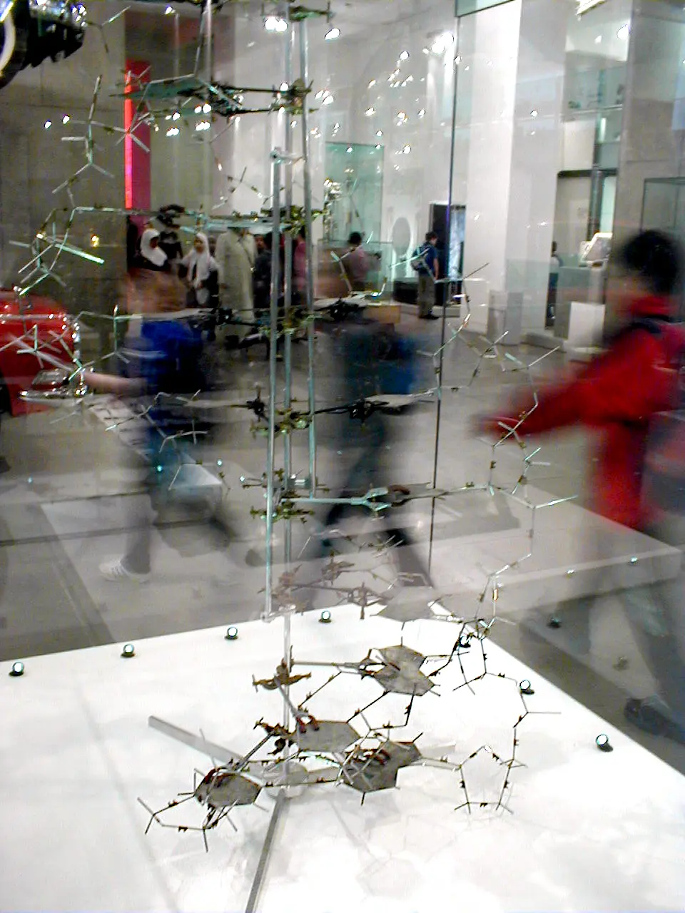
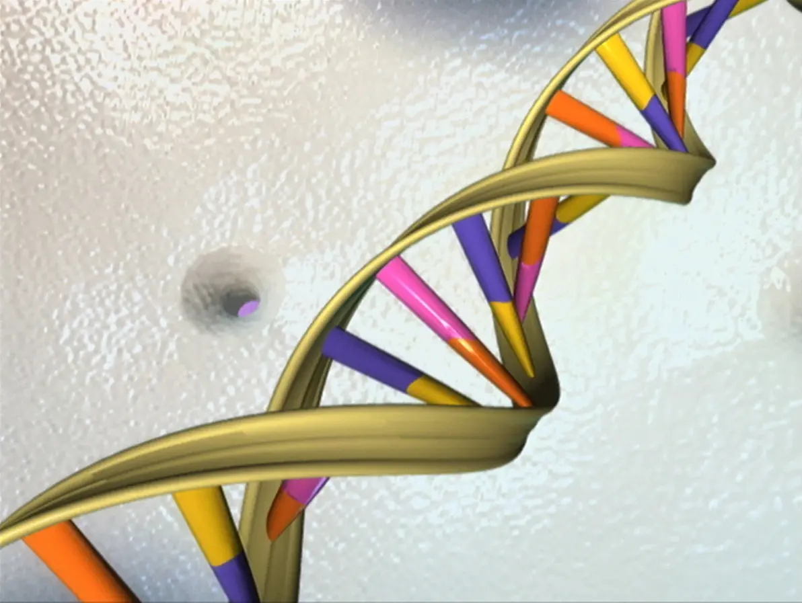

How can two tall pea plants have a short offspring? Follow the information: copy a DNA strand, combine parental alleles, then test your predictions with a virtual generation.
Grades 6–12GenesAllelesReplicationPunnett squaresHistory of discovery
The molecule that stores hereditary information using the bases A, T, C, and G.
Gene
A segment of DNA that carries instructions related to a trait or cell function.
Allele
A version of a gene. Different alleles can produce different trait outcomes.
Trait
An observable characteristic, such as eye color, seed shape, or blood type.
Big Idea
Heredity is information transfer
Parents pass DNA to offspring. Offspring receive combinations of alleles, and those combinations help shape their traits. The central question in genetics is simple: what information was passed on, and how does it show up in the organism?
Parents -> gametes -> offspringGenotype vs phenotype
Structure
How the double helix works
The DNA double helix looks like a twisted ladder. The sides are sugar-phosphate backbones. The rungs are base pairs. Adenine pairs with thymine, and cytosine pairs with guanine. That matching rule matters because it lets DNA copy itself accurately.
Part
Job
Why it matters
Backbone
Supports the molecule
Keeps the long DNA strand stable
Base pairs
Store coded information
The order of bases is the message
Complementary pairing
Matches A-T and C-G
Makes DNA replication possible
Hands-on model
Replication base-pairing lab
Your challenge: Can you reconstruct a missing strand using just its partner?
DNA can copy itself because each base has a specific partner. Complete the new strand by matching each exposed base, then check your evidence. This model shows complementary pairing, not the enzymes or direction of synthesis. Each finished DNA molecule contains one old strand and one new strand.
Template strand
New strand
Select a blank slot, then choose A, T, C, or G.
Copying
Replication
Before a cell divides, DNA unzips and each strand acts like a template. New matching bases are added, producing two nearly identical DNA molecules.
Instructions
Genes and proteins
Genes are not traits themselves. Many genes carry instructions for making proteins; others produce functional RNA. Proteins and gene regulation help shape traits, together with the environment.
Variation
Alleles
Different versions of the same gene can lead to different outcomes, which is why offspring are similar to parents but not identical.
Compare
Genotype vs. phenotype
Genotype
The allele combination an organism carries, such as TT, Tt, or tt.
Phenotype
The visible or measurable trait outcome, such as tall pea plant or short pea plant.
Two different genotypes can sometimes lead to the same phenotype. For example, both TT and Tt can produce a dominant trait.
Tutorial
How to build a Punnett square
A Punnett square is a 2 × 2 grid that maps every possible allele combination two parents can produce. Follow these five steps with any monohybrid cross.
1
Identify the parents' genotypes
Write the two alleles for each parent. For example, a heterozygous tall parent is Tt and a short parent is tt. Capital letters represent dominant alleles; lowercase letters represent recessive alleles.
2
Place Parent 1's alleles across the top
Split the first parent's genotype into its two separate alleles and write one above each column of the grid. For Tt that's T over column 1 and t over column 2.
T
t
3
Place Parent 2's alleles down the left side
Split the second parent's genotype and write one allele to the left of each row. For tt that's t on row 1 and t on row 2.
T
t
t
t
4
Fill each cell by combining the row allele + column allele
Take the column allele and the row allele for each cell and write them together. Always write the dominant allele first. Row 1 × Col 1 = Tt, Row 1 × Col 2 = tt, and so on.
T
t
t
Tt
tt
t
Tt
tt
5
Read the results — count genotypes and phenotypes
Count how many times each genotype appears. For Tt × tt: 2 cells show Tt (tall) and 2 show tt (short). That gives a 1 : 1 phenotype ratio — half tall, half short. Every cell is an equally likely outcome.
Mathematics
Punnett squares are probability models
Each of the four cells represents one equally likely outcome. That means you can convert any Punnett square directly into fractions, decimals, percentages, and ratios — the same tools used in any probability problem.
Cross: Tt × TtThe 1 : 2 : 1 genotype ratio
When both parents are heterozygous, the four cells produce three genotypes. TT appears once, Tt appears twice, tt appears once.
TT
25%
Tt
50%
tt
25%
Cross: Tt × TtThe 3 : 1 phenotype ratio
Both TT and Tt produce the dominant (tall) phenotype. Only tt shows the recessive (short) phenotype. So 3 of 4 offspring look tall.
Tall
75%
Short
25%
Ratio 3 : 1 means for every 1 short plant, expect 3 tall plants.
All crossesFraction → Decimal → Percent
Fraction
Decimal
Percent
1 / 4
0.25
25%
2 / 4
0.50
50%
3 / 4
0.75
75%
4 / 4
1.00
100%
These are the only four fractions a 2 × 2 Punnett square can produce.
Cross
Genotype ratio
Phenotype ratio
Dominant probability
TT × TT
4 TT : 0 : 0
4 dominant : 0 recessive
4/4 = 100%
TT × tt
4 Tt : 0 : 0
4 dominant : 0 recessive
4/4 = 100%
Tt × Tt
1 TT : 2 Tt : 1 tt
3 dominant : 1 recessive
3/4 = 75%
Tt × tt
2 Tt : 2 tt
2 dominant : 2 recessive
2/4 = 50%
tt × tt
4 tt : 0 : 0
0 dominant : 4 recessive
0/4 = 0%
Practice
Fill in the Punnett square
Choose a cross below. Click an empty cell in the grid to select it, then pick the correct genotype from the right panel. Click Check answers when all four cells are filled.
Choose genotype for selected cell
Breeding Lab
Test a generation
Pick a trait, choose the parent genotypes, and watch the square re-calculate. Then click any offspring box to turn the genotype into a visible pea plant phenotype.
One allele comes from each parent. Each of the four cells has a 25% chance; repeated genotypes add together. Dominant does not mean better or more common. This model assumes one gene, two alleles, and complete dominance.
Sample the model
Predict, then sample
Each run creates a fresh sample from the current cross. These are simulated outcomes, not data from real plants. Small samples may wander; larger samples usually move closer to the Punnett square prediction.
Phenotype
Expected
Observed
Run trials to collect data.
Prediction comes from the square. Evidence comes from repeated trials.
Apply
Where this model helps—and where it stops
Pea plants
Mendel tracked visible traits like seed color and plant height to infer rules about dominant and recessive alleles.
Family resemblance
Children inherit allele combinations from both parents, which helps explain why siblings share traits but still differ.
DNA evidence
Because DNA sequences differ across individuals, genetics can also be used in medicine, ancestry, and forensic science.
Limits of simple models
Many traits are influenced by multiple genes and the environment, so real heredity is often more complex than one Punnett square.
Discovery
How we found out DNA carries heredity
None of this was obvious. It took nearly a century — and several scientists building on each other's evidence — to go from "traits run in families" to "here is the molecule, and here is exactly how it copies itself."
Gregor Mendel, the Augustinian friar whose pea-plant counts in the 1850s–60s founded the mathematics of heredity. Public domain, via Wikimedia Commons.Tall and dwarf pea plants — the same tall/short trait you can breed in the lab below, illustrating the 3:1 ratio Mendel counted by hand. Daniel J. Fairbanks, CC BY 4.0, via Wikimedia Commons.
1856 – 1863
Mendel counts 29,000 pea plants
In the monastery garden at Brno, Gregor Mendel bred generation after generation of pea plants and tracked seven traits — including height and seed color — with careful counts instead of casual observation. The ratios he found (like the 3:1 split you can reproduce in the Punnett lab below) led him to propose that invisible "factors," passed one from each parent, controlled each trait. Nobody called them genes yet, and almost nobody read his paper for 35 years.
Rosalind Franklin in 1955, whose X-ray crystallography ("Photo 51") provided crucial evidence of DNA’s helical structure. MRC Laboratory of Molecular Biology, CC BY-SA 4.0, via Wikimedia Commons.
1952
Franklin photographs the helix
At King's College London, Rosalind Franklin and PhD student Raymond Gosling used X-ray crystallography to photograph strands of DNA. Her sharpest image, "Photo 51," showed a clear X-shaped pattern — strong evidence of a helical structure, precise enough to calculate the width of the molecule and the spacing between its coils.

The physical double-helix model Watson and Crick built in 1953 from base-pairing chemistry and Franklin's unpublished X-ray data. Public domain, via Wikimedia Commons.
1953
Watson and Crick build the model
At Cambridge, James Watson and Francis Crick combined base-pairing chemistry with Franklin's unpublished X-ray data — shown to them without her knowledge — to build a physical model of the double helix. Their one-page paper in Nature made the now-famous understatement that the structure "immediately suggests a possible copying mechanism." Franklin's own analysis, published independently the same month, provided the experimental confirmation.

The DNA double helix, illustrated by the National Human Genome Research Institute after the Human Genome Project finished sequencing nearly all 3 billion human base pairs in 2003. NHGRI, public domain, via Wikimedia Commons.
2003
The Human Genome Project finishes reading the code
Fifty years after the double helix was modeled, an international public research team completed the Human Genome Project, sequencing nearly all 3 billion base pairs of human DNA. Mendel's "factors" and Watson, Crick, and Franklin's helix became a largely complete, searchable reference — the foundation for modern genetic medicine.
Check your reasoning: must four offspring include one short plant?
No. For Tt × Tt, each offspring independently has a 25% chance of tt. Four cells describe equally likely allele combinations, not a guaranteed family of four.
Use one prediction and one trial result to support your explanation. Then describe a limitation of the model.
Why does complementary base pairing make DNA replication possible?
What is the difference between a gene, an allele, and a trait?
Why is a Punnett square a probability model instead of a guarantee?
What are some examples where environment changes how a trait appears?
Rosalind Franklin's X-ray data was shown to Watson and Crick without her permission, and only Watson, Crick, and Wilkins won the 1962 Nobel Prize (Franklin had died in 1958, and the prize is not awarded posthumously). Why does it matter who gets credited for a scientific discovery?